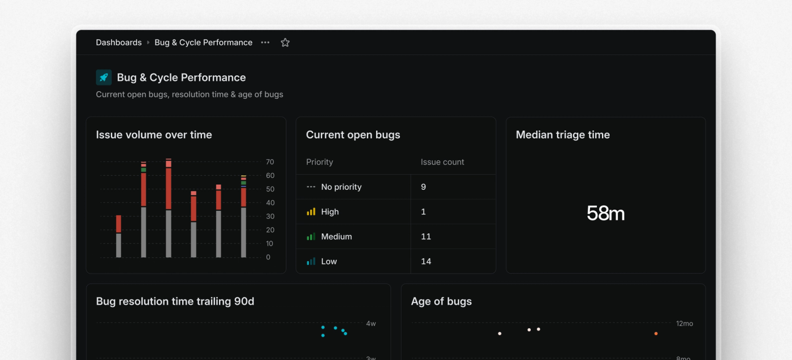
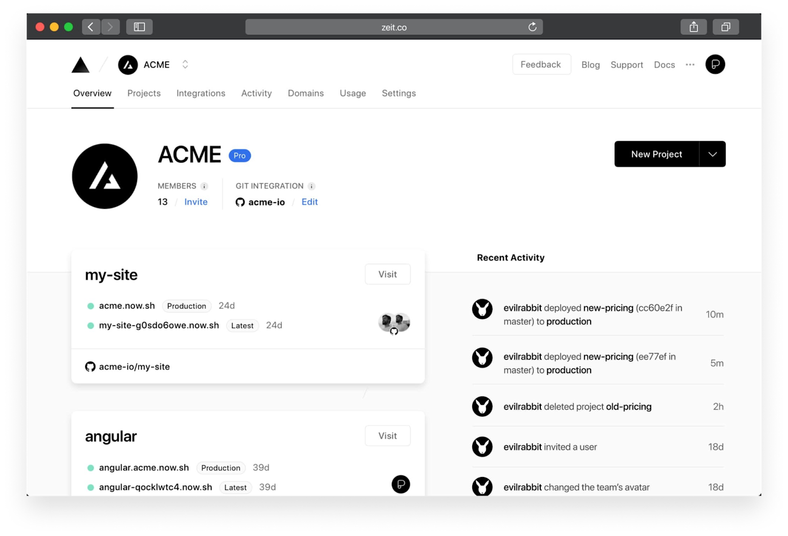
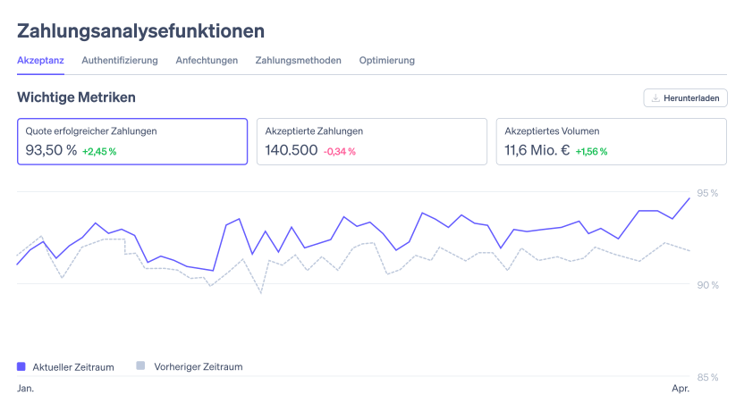
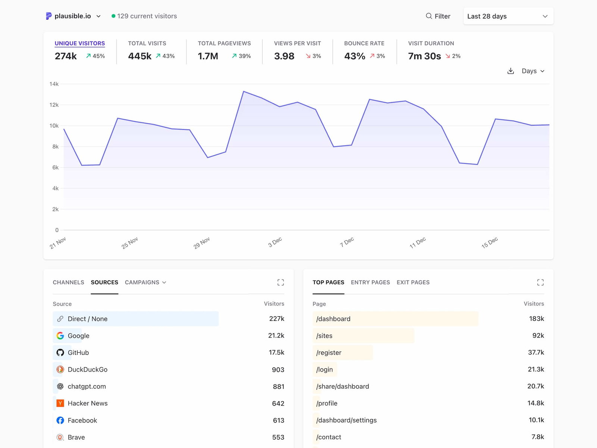
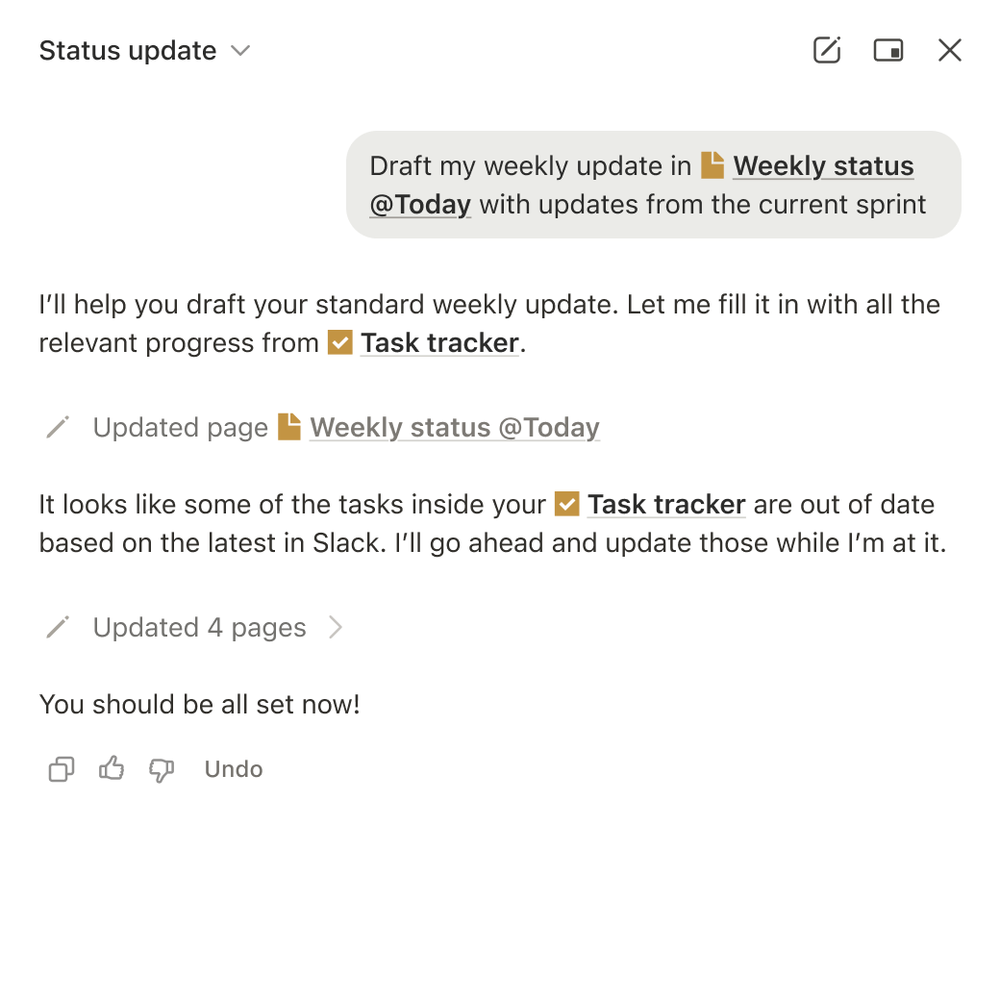

Research · 2026-04-17
Five picks for how the Tracy Harris Co internal dashboard could look and feel. Ranked by fit to the brief: clean, professional, whitespace-heavy, bento. Grown-up, not playtoy. Editorial, not Bloomberg.
Calm monochrome with a single restrained accent. 2026 UI refresh shifted to warmer grays. Bento cards with generous air.

linear.app · dashboards changelog
Why it fits: every axis of Karl's brief. Bento, whitespace, restrained palette, grown-up type. Their changelog already uses bento sizing to signal importance, exactly the pattern for KPIs.
Tracy adaptation: Linear's cool gray to oatmeal canvas. Cream cards + sage hairlines. Aztek green as the single accent. Editors Note serif for the hero numbers (56 to 72px). Poppins everywhere else.
Pure mono, Geist, sidebar-led. The platonic ideal of clean + serious.

vercel.com/blog/dashboard-redesign
Why it fits: restraint benchmark. Karl will see it and go "that."
Adapt: black to aztek green, white to cream, Geist to Poppins + Editors Note italic for section heads.
Editorial typography, big numbers, tables done right. Looks expensive without trying.

stripe.com/payments · analytics
Why it fits: polished without being corporate. Tracy is a premium brand.
Adapt: big-number-small-label pattern. Gold delta arrows. Tables 14px Poppins, hairlines only.
Single page, no sub-menus, sparse and confident. Open-source, deeply un-toylike.

plausible.io · homepage dashboard
Why it fits: whitespace philosophy taken to its logical end.
Adapt: keep the single-page structure. Blue to sage. Add an Editors Note italic header band for personality.
Warmer than Linear or Vercel but still grown-up. Editorial type, soft surfaces, confident empty space.

notion.com/product
Why it fits: closest to Tracy's brand temperature of any big-name SaaS. Warm, human, never cute. Editorial serifs mixed with clean sans, generous air, soft cream surfaces.
Adapt: borrow the paired serif-italic + sans headings, the empty-state voice, the soft-card-on-cream canvas. Keep Notion's quiet table style.
Puffy soft shadows, low contrast, toy aesthetic.
This is the literal "playtoy, kid-like" Karl is calling out. Accessibility nightmare.
14 charts, 12 colours, Bloomberg terminal energy.
Tracy tracks ~20 numbers that matter, not 200. Density signals "engineer built this for myself."
Purple-pink gradients, rainbow charts, "Welcome back, John 👋".
Reads as "I downloaded a template." Generic 2024 startup aesthetic, a tier below Tracy's brand.
Linear's 2026 refresh is the cleanest 1:1 match for the brief on every axis, and the lowest-effort path from where the dashboard sits today. It is shadcn cards, more air, fewer colours, bigger numbers.
Moves: card padding 16 to 32px · grid gap 16 to 24px · hero metrics in Editors Note serif at 56 to 72px · cut palette to oatmeal + cream + aztek + gold + sage · kill drop shadows, use 1px sage hairlines · asymmetric bento (2/3 hero + three 1/3 tiles beneath) · Recharts to single-colour lines, no gridlines.
1 to 2 days of polish. Not a rebuild. Ship, look, iterate. Full writeup →
Sources: Linear · Vercel · Stripe · Plausible · Notion · SaaSFrame bento 2026 · think.design. Curated for Karl Harris, Tracy Harris Co. Kira, 2026-04-17.